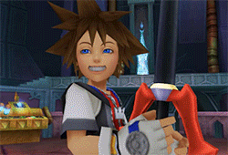

a. 100 years before Sora, the Master of masters* was the first Keyblade wielder. He entrusted his powers to five union leaders, and to his apprentice, L somehow had the ability to see the future and predicted a “great war”. He gave his keyblade, and a “black box” to Luxu* for him to carry out through time so one day the Master of master’s could return.

b. Before his departure, the Master of master’s gave one of the five union leaders, Ava*, a mission to make a secret organization of keyblade wielders to live in hiding so after the “great war” they would live on and keep the light safe.

c. After his departure, Ava created the “Dandelions”, and did exactly what was foretold. Soon after, the keyblade war between the other union leaders unfolded, and all keyblade wielders besides the Dandelions were killed. One of the dandelions was named Ventus (bottom character), and his heart, along with a few others, somehow found their way into the current timeline of the games (more on this later). REMEMBER EPHEMER IN THE MIDDLE (red scarf), HE DIED LONG AGO (but takes over role as head of Dandelions), BUT MAKES AN APPEARANCE IN NEW GAME. On right: Ventus and Ephemer.
a. Eraquis takes Terra*, Aqua*, and Ventus*(guy from Dandelions) as apprentices to start a new age of keyblade wielders.
At the end of this saga, Eraquis trys to fight ventus so that Xehanort won't be able to summon Kingdom Hearts. Terra arrives, and kills his master.
b. Xehanort has evil plan, and he becomes main villain of story. More on him later. Takes apprentice Vanitas* secretly.
c. From the “Book of Prophecies”, when light and darkness clash, the X-blade will be forged – which will be able to summon Kingdom Hearts*.
i. What is Kingdom Hearts? It’s the source of all living things in the “world”, which in this game means all the Disney worlds basically.
d. In order for this to happen, Xehanort had to create a being of pure-light (Ventus*New) and pure-darkness (Vanitas).
e. Xehanort’s goal with said Kingdom Hearts is not completely known until KH3.
f. During this time, Xehanort attempts to make Ventus and Vanitas fight each other, so the X-Blade can be forged.
g. If attempts at this fail, his second plan is to take a *vessel* (Terra) so that he can create his own 13 Darkness’s – which will come to be known as Organization 13. Notice the white hair in picture below...
h. One of his “powers” is that he can time-travel: (what the fuck, for plot reasons). He does this to find the 13 versions of himself. Super confusing shit here.
a. Terra – the oldest, and strongest of the three, plans to become the next Keyblade master. (Xehanort sets eyes on him for his strength) Terra passes his keyblade ability to Riku*, on their visit to the Destiny Islands*. At the end of his story, Terra is saved by Aqua, but still used as Vessel* by Xehanort. He wakes up in a distant place (talked about later).
b. Aqua – the second strongest, becomes a keyblade master. At the end of her story, she casts herself to the realm of darkness in order to save Terra. She also passes her keyblade ability on to Kairi*, on her visit to the Destiny Islands before sacrificing herself to realm of darkness.
c. Ventus – the third group member, also resembles a future character – Roxas*. At end of story, all 3 fight against Xehanort, where Ventus and Vanitas join together, and X-blade is forged. Vanitas decides to sacrifice himself to destroy the X-blade, but in doing so put him in a deep sleep. Aqua hides his body in an unknown location until his heart is returned to him (Afterwards Aqua go bye-bye and Terra falls to Xehanorts hands). Before all of this, Ventus gives his Keyblade ability to Sora, on their visit to the destiny islands. This is a very important story point. Don’t forget, or else.
a. Sora – Main character. Powers passed from Ventus, unknown to him at the time. Once island is attacked by darkness (Xehanort), Sora embarks on Journey to save the seven lights (Book-of-prophecies said that pure darkness would need 13, and light would need 7 hearts, don’t know why but whatever).
b. Riku – Sora’s best friend. Becomes trapped by darkness, and Sora travels to find him.
c. Kairi – Sora’s honey bunny. You know what I mean. When the darkness comes, her heart (for plot reasons) somehow hides itself inside Sora.

a. Heartless – beings devoid of emotion and created from the darkness in someone’s heart (black creatures). Once a heartless is defeated, by a Keyblade, the heart is returned to the light.
b. Nobodies – when someone’s heart creates a heartless, it also creates a Nobody (silver creature). This is created from someone’s darkness and when their soul is separated from their body. Stronger beings create more life-like nobodies – a.k.a organization 13.

c. Organization 13 – the head honchos of the bad guys, and Xehanorts puppets for his master plan. They are the strongest Nobodies, taking forms of people. They are just boss fights lol
a. Ansem is Xehanorts heartless.

b. Xemnas is Xehanorts nobody.
c. Young Xehanort makes no fucking sense, and therefore I will not explain this, you can just be as confused as me in the game.
a. Ansem, KH1’s big bad, was the one behind the darkness attack on Destiny Islands, and manipulated Riku’s heart, manifesting himself inside Riku. Goal was to get Kingdom Hearts, who knew. Ansem, being a form of Xehanort, appears in KH3, as one of Xehanorts Vessels.
i. SUPER IMPORTANT PART: WHEN SORA BEAT ANSEM(RIKU), KAIRI, and the other princesses of heart were still unconscious and without their hearts, so SORA used Ansem’s Keyblade to stab himself and release all of their hearts (he had them because when he went to their worlds and made bonds with them, somehow they ended up in him – weird shit but there ya go). WHEN HE STABBED HIMSELF WITH IT – he created a heartless, and a NOBODY!!!!!! HUGE PLOT POINT. The Nobody became ROXAS!!!!
b. Xemnas, KH2‚Äôs big bad, was the one behind the Organization 13 nobodies. Him being the strongest made him leader obviously. Sora whooped that ass after he finally finds Riku and Kairi - babygirl(üòä).
c. Although Xemnas failed, Xehanort was finally able to create the “real” organization 13 because he had the vessels to do so.
a. Roxas, being Sora’s Nobody, was found by Xemnas when created, and joined Organization 13 because he didn’t know who he was. He made friends, somehow(they don’t have hearts soooooo…) with Axel (spiky red hair guy), and a girl named XION!!!! Uber plot point by the way. Xion, was a nobody created from thin air by Xemnas, just in case Roxas couldn’t fulfill his duty to be a vessel. Xion’s purpose was to drain the abilities and memories from Roxas, and Sora. Since she was becoming a leech, Sora lost memories, and Roxas lost powers. Xion, fully aware of her role, became closer to Roxas and Axel so she could absorb his powers faster. Soon after, she somehow gets feelings that she likes Roxas and Axel and decides to kill herself (not-really, she makes Roxas fight her and kill her) so that the organization can’t hurt her new friends ( i cry everytime☹). In doing so, Sora’s memories are all transferred to Roxas. Axel, working as a double agent for “Ansem, the wise” (The real Ansem, and has a sexy voice, instructs Axel to keep Roxas safe so that he can use Roxas to restore Sora’s memories) knocks Roxas out before he can return to the Organization, but is then apprehended by other Organization members. At the end though, Axel gets Roxas to Ansem the wise, and Roxas sacrifices himself to restore Sora back to his full self.
b. Why was Sora not himself/sleeping, and what the fuck is going on…
i. Ansem the Wise was a researcher of the hearts and kingdom hearts, like Xehanort. Intentions aren’t as bad, but still fucks up quite a bit. He and a girl named Namine, a nobody witch that can manipulate memories, were trying to help Sora, so they needed Roxas. Once Roxas was obtained, Ansem the wise put Roxas in a data simulation so that the Organization couldn’t find him, and so Sora’s memories could be restored. Once Roxas learned the truth, he decided to sacrifice himself to restore Sora.
b. Ventus and Roxas are identical… WhY???? When Ventus sacrificed himself to destroy the X-blade his heart was separated from his body. Where the fuck did it go? Inside Sora. Yep. When Sora made a Nobody, it took them form of Ventus! Yep. Not Sora...
When Xion was killed by Roxas, her memory was erased from everyone that knew who she was. Somehow, when Sora woke up, he remembered who she was. Barely...
a. When nobodies die, their Somebodies, or their human selves, are returned to 100% and they retain their Nobodies memories, but normally have good intentions. Axel for example, sacrifices himself to help Sora in KH2, and becomes Lea*. Only important to know if you don’t want to be confused. Lea takes on persona of Axel because let’s be real, Axel was the GOAT.